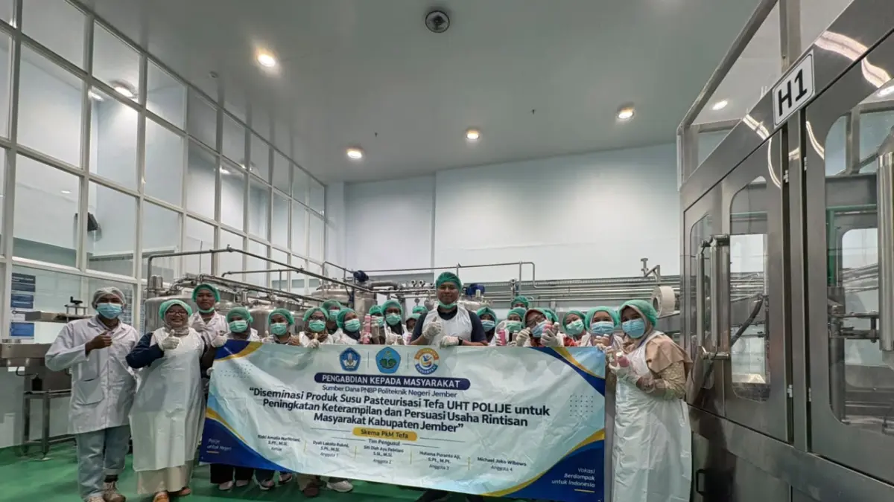

Susu Pasteurisasi Original
Susu segar dengan rasa alami dan cocok untuk konsumsi sehari-hari.
Lihat di katalog →
TEACHING FACTORY · POLIJE
Menghubungkan pendidikan vokasi, produksi, dan pengembangan produk susu dalam satu ekosistem pembelajaran nyata.
Belajar. Berinovasi. Berproduksi.

TENTANG TEFA UHT
TEFA UHT merupakan wadah pembelajaran berbasis produksi di Politeknik Negeri Jember. Mahasiswa mengenal proses pengolahan susu, praktik mutu, dan pengembangan produk melalui kegiatan yang terarah.
Profil TEFA →Kenali ragam produk dan potensi pengembangannya di TEFA UHT.
Susu segar dengan rasa alami dan cocok untuk konsumsi sehari-hari.
Lihat di katalog →
Perpaduan susu dengan cita rasa stroberi yang menyegarkan.
Lihat di katalog →

Susu yang melalui proses sterilisasi untuk menjaga kualitas dan daya simpannya.
Lihat di katalog →Diskusikan kebutuhan pembelajaran, pengembangan produk, atau kerja sama bersama TEFA UHT.